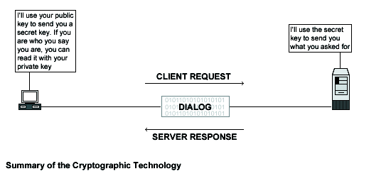

24.1. Linux OPENSSL Server
The OpenSSL Project is a collaborative effort to develop a robust, commercial-grade, fully featured, and Open Source toolkit implementing the Secure Sockets Layer; SSL v2/v3, and Transport Layer Security -TLS v1
protocols with full-strength cryptography. The project is managed by a worldwide community of volunteers that use the Internet to communicate, plan, and develop the OpenSSL toolkit and its related documentation.
 | |
| From the [OpenSSL web site] |
The main advantages gained by using encryption technology follow:
Cryptography Advantages
- Data Confidentiality
When a message is encrypted, the input plain text is transformed by an algorithm into enciphered text that hides the meaning of the message and can be sent via any public mechanism. This process involves a secret key that is used to encrypt and later decrypt the data. Without the secret key, the encrypted data is meaningless.
- Data Integrity
A cryptographic checksum, called a message authentication code -MAC, can be calculated on arbitrarily user-supplied text to protect the integrity of data. The result, text and MAC are then sent to the receiver which can verify the trial MAC appended to a message by recalculating the MAC for the message, using the appropriate secret key and verifying that it exactly equals the trial MAC.
- Authentication
Personal identification is another use of cryptography, where the user/sender knows a secret, which can serve to authenticate his/her identity.
- Electronic Signature
A digital signature assures the sender and receiver that the message is authentic and that only the owner of the key could have generated the digital signature.
| Patents |
Several legal issues exist for SSL technology. If you intend to use OpenSSL for commercial purpose, you may need to obtain a license from RSA regarding use of RSA libraries. Here's an excerpt from the README file of OpenSSL: Various companies hold various patents for various algorithms in various locations around the world. _YOU_ are responsible for ensuring that your use of any algorithms is legal by checking if there are any patents in your country. This file contains some of the patents that we know about or are rumored to exist. This is not a definitive list.
|

These installation instructions assume:
Commands are Unix-compatible.
The source path is /var/tmp -other paths are possible.
Installations were tested on Red Hat Linux 6.1 and 6.2.
All steps in the installation will happen in super-user account root.
OpenSSL version number is 0.9.5a
Before you decompress the tarballs, it is a good idea to make a list of files on the system before you install Openssl, and one afterwards, and then compare them using diff to find out what file it placed where. Simply run find /* > OpenSSL1 before and find /* > OpenSSL2 after you install the software, and use diff OpenSSL1 OpenSSL2 > OpenSSL-Installed to get a list of what changed.
These are the Package(s) required:
| OpenSSL Homepage: http://www.openssl.org/ |
| You must be sure to download: openssl-0.9.5a.tar.gz |
To Compile, you need to decompress the tarball (tar.gz).
[root@deep] /# cp openssl-version.tar.gz /var/tmp
[root@deep] /# cd /var/tmp
[root@deep ]/tmp# tar xzpf openssl-version.tar.gz
|